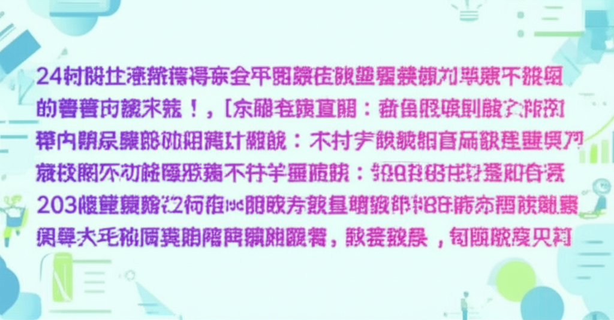

# 近期健康與時事新聞摘要 (2025年6月9日)
## 引言
以下為近期(2025年6月9日前後)從網路新聞及資訊平台蒐集到的健康與時事相關摘要。內容涵蓋健康知識、地方新聞、體育消息、疫情資訊、以及其他重要時事議題。旨在提供一個快速瀏覽，了解近期的重點資訊。
## 主體內容
### 第一點：健康與體重管理
* **優活健康網:** 作為台灣專業的健康知識平台，提供正確的就醫認知與醫療知識。
* **IQ健康網:** 關注體重控制，特別提到隨著年齡增長體重控制的困難，以及端午粽子可能造成的慢性發炎問題。
* **嘉基醫院:** 嘉基減重中心榮獲「卓越體重管理中心」稱號，顯示其在體重管理方面的專業性。
* **Yahoo新聞:** 強調減重也能抗疫，指出肥胖會增加重症與死亡風險。短期防疫除了勤洗手戴口罩，長期體重控制也很重要。
* **壹蘋新聞網:** 同樣提及體重控制與防疫的關聯性，指出肥胖者染疫後死亡風險高於體重正常者。
### 第二點：地方新聞與體育
* **开封市人民政府网站:** 發布了开封市的統計業務培訓會及交通運輸局安全排查工作的相關新聞。
* **晋江电视台:** 報導奧運冠軍張雨霏到晉江“探廠”的消息，展示了運動員與產業的互動。
* **臺北市立南港高級工業職業學校:** 發布學校相關公告，例如重補修學生出席紀錄表。
### 第三點：時事與其他
* **大紀元:** 報導了民進黨立委沈伯洋及其父親遭到攻擊的事件，涉及兩岸關係和媒體輿論。
* **王鼎貴金屬:** 提供黃金白銀買賣資訊。
* **壹蘋新聞網:** 報導了關於“波波中藥師”可能竄全台的爭議，涉及藥師資格認定問題。
## 結論
總體來看，近期的新聞摘要涵蓋了健康、地方發展、體育及重要的時事議題。健康方面，體重管理與防疫仍然是關注的重點。地方新聞則反映了各地的發展動態。而時事議題則牽涉到政治、經濟等層面，值得持續關注。